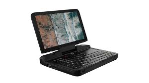
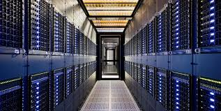
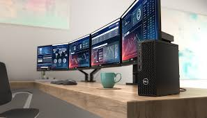

1.Supercomputer |
 |
A supercomputer is an exceptionally powerful computer designed to perform complex and large-scale computations at extremely high speeds.
Supercomputers are used for tasks that require immense processing power, such as:
Weather Forecasting: Simulating climate models and predicting weather patterns.
Scientific Research: Conducting simulations in physics, chemistry, and biology.
Cryptography: Breaking codes and securing data.
Complex Modeling: Analyzing and simulating complex systems, such as molecular interactions or cosmic events. |
2. Mini Computer |
 |
A minicomputer, often just called a "minicomputer," is a mid-sized computer that was popular from the 1960s through the 1980s.
It's smaller and less powerful than a mainframe but larger and more capable than a microcomputer (personal computer). Minicomputers
were used for tasks such as data processing, scientific research, and industrial control, serving multiple users or departments within an organization.
They offered a good balance of performance and cost, making them suitable for smaller enterprises or specialized applications.
|
3. Mainframe computers |
 |
A mainframe computer is a large, powerful machine used primarily by large organizations for critical applications that require high
processing power and reliability. It handles and processes vast amounts of data and supports multiple users simultaneously. Mainframes are known for their
robustness, scalability, and ability to run complex transactions and applications with high uptime. They are commonly used in industries like banking,
insurance, and government for tasks such as transaction processing and large-scale data management.
|
4.Workstation Computer |
 |
A workstation computer is a high-performance desktop computer designed for technical or scientific work that requires substantial processing power, memory
, and graphics capabilities. Unlike regular personal computers, workstations are optimized for tasks such as complex simulations, 3D rendering, and large-scale
data analysis. They are often used by professionals in fields like engineering, animation, and research due to their superior reliability, performance, and often
specialized hardware and software.
|
5.Personal computers (PCs) |
 |
A personal computer (PC) is a versatile, single-user computer designed for general use by individuals. It includes hardware components like a processor,
memory, storage, and peripherals such as a monitor, keyboard, and mouse. PCs are used for a wide range of activities, including word processing, web browsing,
gaming, and multimedia. They come in various forms, including desktops, laptops, and tablets, and are typically user-friendly and affordable for home or office use
|